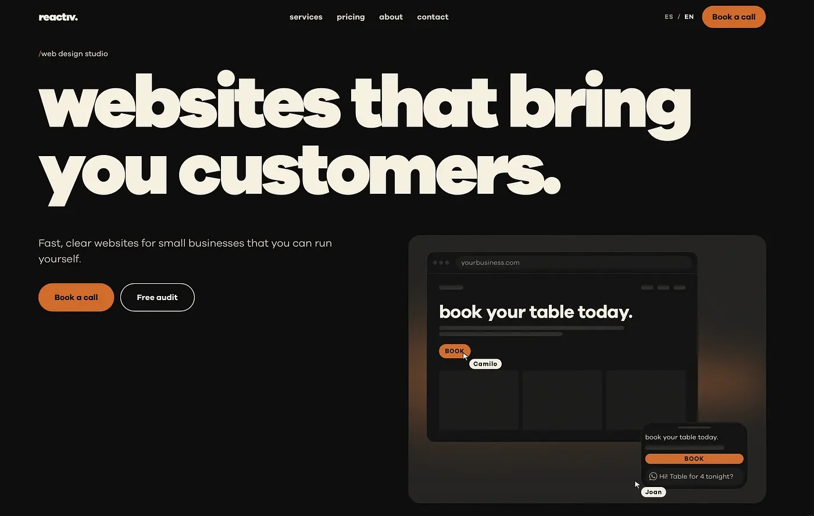

¿Cuántos tokens quemas en promedio haciendo una web con tu IA favorita? No tengo la cuenta exacta, pero yo gastaba cerca de dos sesiones completas de tokens con Claude por cada página.
Sí, lo sé, es demasiado. Pero así funcionaba mi flujo de trabajo: le pedía algo a Claude, generaba algo parecido a lo que imaginaba, le pedía un ajuste, ese ajuste rompía otra cosa, pedía otro ajuste y repetía el ciclo hasta que se me acababan los tokens o la paciencia (a veces las dos cosas al tiempo). No era la mejor forma de usar una herramienta que se supone que te hace más ágil, y justamente por eso escribo este artículo.
Llevaba meses pensando cómo mejorar mi forma de trabajar con Claude sin llenar cada conversación de prompts eternos y correcciones. Quería un framework que me permitiera iterar de forma efectiva y llegar a un resultado mucho más cercano a lo que tenía en la cabeza.
Como diseñador pienso de forma muy visual: jerarquías, proporciones, qué va arriba del fold, cómo respira una sección. Un modelo de lenguaje como Claude, en cambio, “piensa” en texto. No se forma una imagen mental como lo haría yo, o como probablemente lo haces tú mientras lees esto. Por eso, cuando le pedimos algo como “crea una landing moderna con un hero potente y una sección de servicios en bento” (ya sé que no es el mejor prompt, pero sirve de ejemplo), dejamos que un modelo que piensa en texto asuma la arquitectura del sitio, la distribución de cada página y la estética completa de la landing. Tres dimensiones de diseño en un solo mensaje.
El problema empieza cuando algo de eso no me gusta, porque el feedback también llega mezclado. “El hero se ve muy pesado” (de nuevo, a modo de ejemplo) puede significar muchas cosas: que sobra contenido, que la grilla está mal o que un color es demasiado oscuro. La IA no sabe qué dimensión tocar, así que toca todas. Y ahí empieza el loop.
Entonces, si el problema viaja mezclado, ¿la solución debería ser separar esas dimensiones? Mi hipótesis es que sí. Darle a la IA una fuente de verdad por cada dimensión debería permitirme trabajar de forma mucho más precisa, de modo que cada cambio tenga un solo lugar donde vivir. Si la estructura, el layout y la estética quedan definidos en su propio archivo antes de que la IA escriba una sola línea de código, la construcción debería ser mucho más rápida, la iteración más simple y el modelo debería tener mucho menos espacio para improvisar.
Al framework que salió de esta hipótesis le puse un nombre inspirado en la biología de nuestro propio cuerpo, porque describe bastante bien el orden en que se toman las decisiones: Skeleton, Bones & Skin. Y siendo honesto, mientras escribo esto, siento que no pude nombrarlo mejor.
La idea es simple: cada archivo responde por una sola dimensión del diseño, y ninguno se mete en el terreno del otro.
SKELETON.md es la arquitectura, el esqueleto que sostiene todo. Aquí defino las rutas del sitio, qué objetivo de negocio cumple cada página, qué secciones la componen y en qué orden, cómo se mueve el usuario entre ellas y quién tiene acceso a qué. Es el mapa del sitio, pero con intención.
BONES-[página].md son los wireframes, escritos en markdown. Si el esqueleto dice qué secciones existen, los huesos dicen cómo se distribuyen en el espacio: grillas, splits, bentos, cuánto contenido cabe en cada bloque, qué entra en la primera pantalla y cómo se reorganiza todo en móvil. Aquí no hay colores ni tipografía, solo estructura. Hay un archivo por página y uno compartido para lo que se repite en todo el sitio: header, navegación y footer.
SKIN.md es la piel, el sistema de diseño. Colores, tipografía, bordes, sombras, espaciado y, algo que casi siempre se nos olvida pedirle a la IA, los estados de cada componente: hover, active, focus, disabled y, en formularios, error. Es básicamente un design.md, pero nombrado diferente.
¿Y qué cambia en la práctica? Que el feedback deja de ser ambiguo. Si no me gusta la estructura, edito BONES. Si no me gusta la estética, edito SKIN. Si me falta una página, empiezo por SKELETON. El archivo que abro ya le dice a la IA qué tipo de cambio le estoy pidiendo, y ya no tiene que adivinar si “el hero se ve pesado” era un problema de grilla o de color.
Ahora, escribir estos archivos a mano cada vez sería tan agotador como el loop del que quería salir. Así que convertí el método en cuatro skills, una por cada paso:
- skeleton-generator toma la intención del negocio y escribe el SKELETON.
- bones-generator toma una ruta del SKELETON y escribe su wireframe.
- skin-generator define el sistema de diseño.
- layout-orchestrator lee los tres archivos y construye el código.
Ahora, el orquestador es la pieza que cierra el ciclo, y quiero detenerme en él un momento. Sabe qué archivo manda en cada tipo de decisión, lee el proyecto antes de escribir y construye siempre en el mismo orden: primero los tokens, luego los componentes, el shell, las secciones, los estados y por último las rutas. Pero lo que más valoro es otra cosa: cuando tiene que rellenar un hueco o encuentra dos archivos que se contradicen, me lo reporta en lugar de resolverlo en silencio. Al final, revisa el resultado renderizando la página en desktop y en móvil.
Ahora, para ser 100% honesto, tuve una pequeña ayuda. Y es que este concepto se aterrizó en una conversación con Gemini. Llegué con el problema de querer una forma de tener el wireframe en un archivo .md, y salí con la separación en tres archivos y la idea de las cuatro skills. Después me pasé a Claude para refinarlas.
Con el método listo, construí la web completa de mi agencia, reactiv.site, en dos runs y en menos de una sesión de tokens. Sí, la misma persona que quemaba dos sesiones por página.
Para que se entienda qué significa eso en la práctica, así se ve el hero del home en su archivo BONES (lo abrevié un poco):
### Hero
- Layout: desktop: headline spans all 12 columns; below it,
value proposition and both actions in cols 1-5 and the site
mockup in cols 7-12 (4:3), top-aligned with the value proposition.
- Content: eyebrow (max 5 words); headline (max 7 words, lowercase
statement ending in a period); value proposition (max 15 words);
Book a call (primary); Free audit (secondary).
DESKTOP
+------------------------------------------------------------+
| / design & web studio |
| websites that bring you customers. (HEADLINE, 12c) |
| VALUE_PROP (≤15 words) | +-----------------------+ |
| [BOOK A CALL] [FREE AUDIT] | | SITE_MOCKUP 4:3 | |
| cols 1-5 | | cols 7-12 | |
+------------------------------------------------------------+Y así quedó en producción:

El titular ocupa las doce columnas, la propuesta de valor y los botones viven a la izquierda, y el mockup arranca a la derecha, alineado con la propuesta de valor. En móvil los botones se apilan a lo ancho y el mockup asoma justo en el borde de la primera pantalla, tal como pedía el archivo. Nada de eso lo tuve que negociar en el chat. Estaba escrito.
Ahora, quiero ser honesto con lo que esto demuestra y lo que no. Es un caso, el mío, con un proyecto que conozco de memoria. Las pruebas de los generadores de SKELETON y BONES usaron una sola corrida por versión, lo que alcanza para ver mejoras claras pero no para afirmar que dos versiones rinden igual. El orquestador y el generador de SKIN todavía no pasan por ese mismo método. Y cuando reescribimos el orquestador, quitamos a propósito las promesas de “pixel-perfect” y “100% determinista” que tenía al principio. La IA sigue interpretando; la diferencia es que ahora tiene mucho menos que adivinar.
También hay fricciones que todavía no resuelvo. SKIN y BONES usan breakpoints distintos por defecto (720 y 768 píxeles), y la parte responsive de SKIN se pisa con lo que ya define BONES. Son justo el tipo de solapamiento que el método intenta eliminar, así que están de primeras en mi lista, junto con probar el orquestador y el generador de SKIN con el mismo rigor que los otros dos.
Pero si tuviera que quedarme con una sola cosa de todo este experimento, no sería la velocidad. Sería darme cuenta de que el problema de iterar con IA se parece muchísimo a uno que los diseñadores ya sabemos resolver: separar responsabilidades, documentar decisiones y tener una fuente de verdad para cada cosa. Hacemos wireframes antes de diseñar en alta fidelidad por una razón y resulta que la IA también necesita esas razones, solo que en un formato que pueda leer.
Así que si diseñas o construyes webs con IA y te reconociste en el loop del principio, prueba separar antes de pedir. Aunque no uses estas skills, escribir la estructura, el layout y la estética por separado ya cambia la conversación.
Artículo escrito por mí, pero corregido y reestructurado con IA. También publicado en Medium.